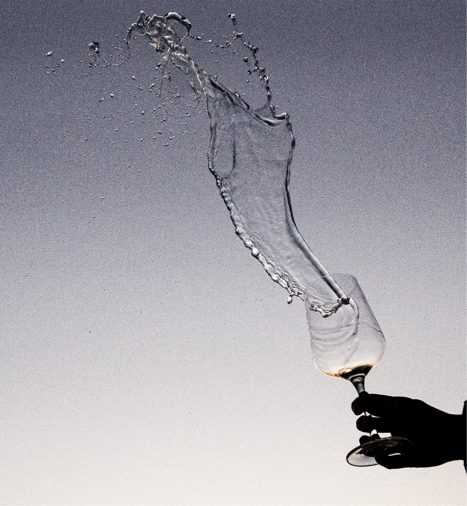

WASSERWAND
|  |  |
|---|---|
 |
Kamera Einstellung
Eine Wasserwand ist ein fantastisches Element zu fotografieren. Wen man es schafft das Wasser so zu fotografieren das es noch aussieht wie eine klare Wand, ergibt das ein atemberaubendes Bild. Man muss darauf achten, dass man das Wasser richtig in Bewegung setzt. Eine schwungvolle Bewgung, sodass möglichst lange eine Wand zu erkennen ist. Ich finde die Wand zu fotografieren ist nicht so schwierig mit der richtigen Kameraeinstellung geht es recht gut. Bei der Kameraeinstellung soll auch die Verschlusszeit kurz sein und die Blende weit offen.
Verschlusszeit - 1/5000sek
Blende - 2.8